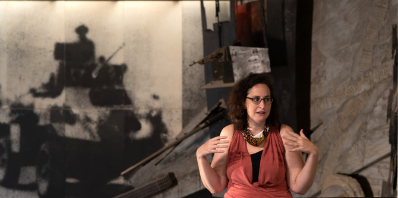

As part of a process of in-depth study of a unit on leadership and change, fellows of Cohort 2 of the Mandel Program for Cultural leadership in the Negev led a series of study tours – both real and virtual – for their colleagues, in which they presented the settings in which they work. These tours of diverse locations throughout the Negev play a central role in familiarizing the program's fellows with challenges and issues that arise in the field, and provide a broad overview of the Negev.
This year, the coronavirus presented a unique set of challenges for the study tour component of the program. Nonetheless, the fellows were still able to enjoy a fascinating series of “visits,” whether virtual or real-world.
The first study tour, conducted via Zoom, focused on culture in rural settings and took the fellows to several locations in the Ramat Hanegev regional council. Their first meeting was with Aviva Freedman, who explained the significance of creating and consuming various forms of culture in a sparsely populated region, where villages are located at some distance from one another, while still relatively close to cities such as Ashdod and to the outskirts of the Tel Aviv metropolitan area.
Next, the fellows made a series of quick virtual visits organized by Buzi Raviv, which introduced them to initiatives that are creating alternative ways of thinking about culture. These included a local theater that is based in someone's living room and a local internet radio station that operates out of a local pub.
The first study tour ended with a virtual meeting with
Omri Keren Lapidot of Kibbutz Hatzerim, in which the fellows learned about the significance of cultural life in the kibbutz movement and how it has changed over the years.
 The Center for Young Adults in Ofakim
The Center for Young Adults in Ofakim
The second study tour took the fellows to the town center of Ofakim, where they met with fellow Nadav Mishali. The meeting took place at the town’s Center for Young Adults, which is close to the historical Kochav movie theater and had been a cultural and social hub in Ofakim. The fellows then attended a private screening of Nadav's first movie at the Ofakim Cinematheque, which he founded.
Next, the fellows traveled to Netivot, where they met with a local entrepreneur who is involved in developing a branding plan for the town and in creating places for residents to come together. This session was led by Isaac Cohen, who brings together people and places in Netivot and in the area where he lives.
The third study tour, held ahead of the program’s return to a hybrid learning model that combines in-person and virtual learning, included a visit to the Yad Mordechai museum. The fellows were treated to a fascinating tour, led by Tamar Hertzberg-Shoseyov, that explored themes related to architecture, curation, and guiding. Afterward, the fellows met with Nir Ben Gal, the founder of the Adama dance school, who spoke about artistic creation in the Negev, his 17 years of activity in Mitzpe Ramon, and his move to the town of Sderot.
The hybrid nature of the study tours, their depth and diversity, and the opportunity they offered to see the work of colleagues up close, made the tours richly rewarding for the fellows. The study tours also served as a reminder of how much remains to be done in order to expand these impressive efforts and expose the general public to the cultural wealth of the Negev.
 The Yad Mordechai Museum
The Yad Mordechai Museum
{kind=link}